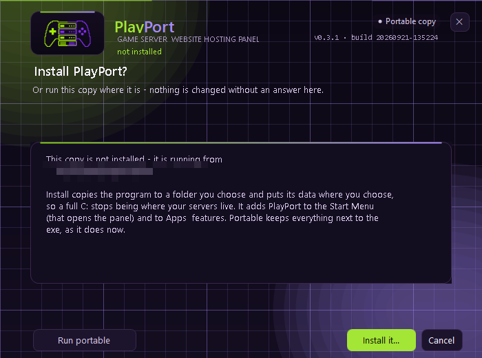
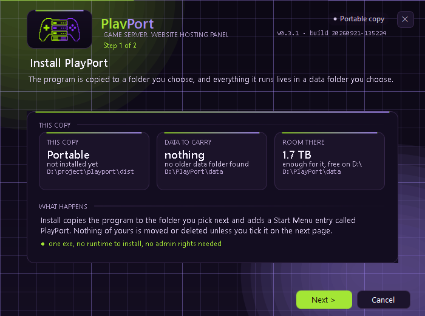
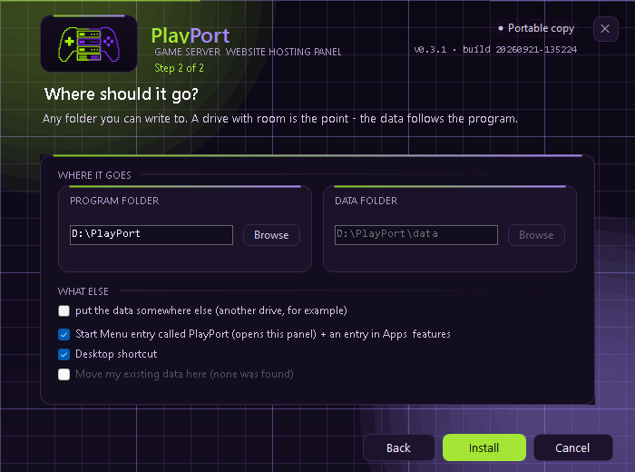
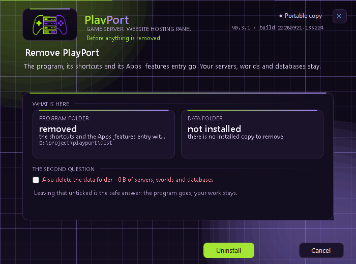

Minecraft networks
A Velocity proxy, a hub, your game servers and a limbo lobby, built and wired together in a single action. Player forwarding, the shared secret and every config written for you.

Meet PlayPort, an all-in-one self-hosting platform. Bring your hosting together in one place, on your terms.

Game servers and websites, managed from a single portable executable. No installer, no runtime to ship, no external database.
A Velocity proxy, a hub, your game servers and a limbo lobby, built and wired together in a single action. Player forwarding, the shared secret and every config written for you.
A first-party Minecraft plugin bundled inside the app, so a server does not need a stack of third-party jars. Over 90 modules, one profile per gamemode, and a full editor in the panel. Nothing in it can be bought.
Vanilla and Paper, with automatic downloads and version updates straight from Mojang and PaperMC.
Boots SteamCMD for you to install and update dedicated servers, with live download progress and update timers.
Static, PHP/FastCGI and reverse-proxy sites. Each one runs on its own port with its own file manager.
One click for a real Let's Encrypt certificate with a built-in ACME client, a self-signed certificate for LAN use, or your own PFX.
Share a site on a temporary public URL with no account and no open ports, or set up named tunnels for stable hostnames.
Choose exactly what a backup contains, then copy it to a folder, a share, or an S3-compatible bucket such as Cloudflare R2 or Backblaze B2.
A managed MariaDB server, with an isolated database and user for any site or game server in one click.
Everything lives in a playport-data/ folder beside the app. Delete the folder to uninstall completely.
Real captures from the panel. Or open the interactive demo and click around a simulated panel in your browser.



playport-data/ folder. Nothing is left behind on your system.Not ready to download? The demo is a simulated panel that runs in your browser. Build a Minecraft network in one click, install the bundled PlayPort Core plugin, watch a live console and host a website, all without installing anything.
PlayPort is a paid product. Buying it gives you PlayPort.exe, a portable Windows 10 and 11 app of about 6 MB that needs only the .NET Framework already inside Windows. There is no free download.
Checkout is not live yet. Point this button at your store, then remove this note. The manual and the interactive demo are free to browse in the meantime.
Not code-signed. The build is unsigned, so Windows may warn the first time it runs. That is expected. See the disclaimer for what to click, and check the file against the checksum you receive with your purchase.
No. PlayPort is a single executable that runs on Windows 10 and 11. Double-click it and it opens in your browser at http://127.0.0.1:8080/. It uses the .NET Framework that already ships with Windows.
No. The build is not code-signed, so SmartScreen warns about it. Click More info, then Run anyway. You can confirm you have the real file by comparing its SHA-256 hash with the checksum that comes with your purchase.
Everything lives in a playport-data/ folder next to the executable: settings, websites, game servers, databases and backups. Delete that folder and PlayPort is fully uninstalled. If the folder it is in is not writable, it falls back to %LOCALAPPDATA%\PlayPort.
Yes. Forward the ports you want on your router and open the matching ports in Windows Firewall, or use a built-in Cloudflare tunnel to get a public URL without touching your router at all. The manual walks through both.
Not yet. This release targets Windows. The panel offers a phone-friendly layout, so you can manage it from a phone on the same network.
No. PlayPort is proprietary software, all rights reserved. The source is not published. See the licence.